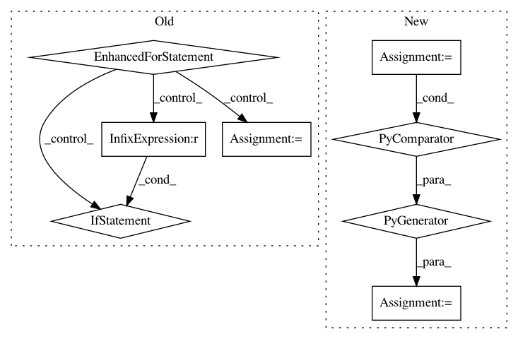

96a364e27fe2d4cb55328150a2c4b2d97acc8f3f,sklearn/calibration.py,CalibratedClassifierCV,fit,#CalibratedClassifierCV#,164
Before Change
"sample weights will only be used for the "
"calibration itself." % estimator_name)
for train, test in cv.split(X, y):
this_estimator = clone(base_estimator)
if sample_weight is not None and base_estimator_supports_sw:
this_estimator.fit(X[train], y[train],
sample_weight=sample_weight[train])
else:
this_estimator.fit(X[train], y[train])
calibrated_classifier = _CalibratedClassifier(
this_estimator, method=self.method, classes=self.classes_)
sw = None if sample_weight is None else sample_weight[test]
calibrated_classifier.fit(X[test], y[test], sample_weight=sw)
self.calibrated_classifiers_.append(calibrated_classifier)
return self
def predict_proba(self, X):
Posterior probabilities of classification
After Change
parallel = Parallel(n_jobs=self.n_jobs, verbose=self.verbose,
pre_dispatch=self.pre_dispatch)
self.calibrated_classifiers_ = parallel(delayed(
_fit_calibrated_classifer)(clone(base_estimator),
X, y,
train=train, test=test,
method=self.method,
classes=self.classes_,
supports_sw=supports_sw,
sample_weight=sample_weight)
for train, test
in cv.split(X, y))
return self
def predict_proba(self, X):
In pattern: SUPERPATTERN
Frequency: 3
Non-data size: 8
Instances
Project Name: scikit-learn/scikit-learn
Commit Name: 96a364e27fe2d4cb55328150a2c4b2d97acc8f3f
Time: 2020-07-26
Author: git@jjerphan.xyz
File Name: sklearn/calibration.py
Class Name: CalibratedClassifierCV
Method Name: fit
Project Name: PIQuIL/QuCumber
Commit Name: 6a9b9a282e8698f7a8c5d66c0e42851bd0c53d2b
Time: 2019-12-23
Author: emerali@users.noreply.github.com
File Name: tests/grads_utils.py
Class Name: ComplexGradsUtils
Method Name: transform_bases
Project Name: geekcomputers/Python
Commit Name: 6a40871d5bd21bd8786bc340008dfa8d8bf02b05
Time: 2020-03-17
Author: 62071377+Msubboti@users.noreply.github.com
File Name: Print_List_of_Odd_Numbers.py
Class Name:
Method Name: